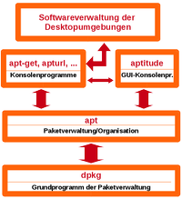
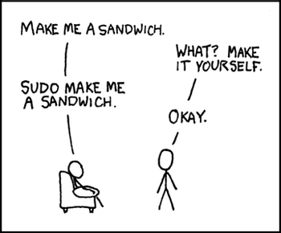

Einführung für Linux Umsteiger
 Wer über eine andere Linux-Distribution zu Ubuntu kommt, dem werden manche Dinge vertraut vorkommen, während andere völlig unbekannt sind. Das Paradebeispiel ist wahrscheinlich das unter openSUSE eingesetzte YaST, ein zentrales Systemmanagement-Werkzeug. Das prinzipiell geniale Konzept von YaST ist gleichzeitig das größte Problem, wenn man von openSUSE auf eine andere Distribution umsatteln möchte. Aber auch andere Distributionen enthalten entsprechende "Spezialitäten", z.B. bei der Paketverwaltung.
Wer über eine andere Linux-Distribution zu Ubuntu kommt, dem werden manche Dinge vertraut vorkommen, während andere völlig unbekannt sind. Das Paradebeispiel ist wahrscheinlich das unter openSUSE eingesetzte YaST, ein zentrales Systemmanagement-Werkzeug. Das prinzipiell geniale Konzept von YaST ist gleichzeitig das größte Problem, wenn man von openSUSE auf eine andere Distribution umsatteln möchte. Aber auch andere Distributionen enthalten entsprechende "Spezialitäten", z.B. bei der Paketverwaltung.
Obwohl alle Distributionen den Linux-Kernel nutzen, gibt es damit teilweise erhebliche Unterschiede. Dieser Artikel versucht, die Besonderheiten – oder auch Eigenheiten – von Ubuntu kompakt und übersichtlich darzustellen. Während einige der Unterschiede auf der Verwandtschaft mit Debian basieren, gibt es eine weitere Unterteilung in Bestandteile, die (bisher) nur in Ubuntu enthalten sind.
Nicht für alle relevant ist der Gemeinschaftsgedanke von Ubuntu, der im Code of Conduct festgelegt ist. Rückblickend lässt sich aber feststellen, dass diese Prinzipien zum Erfolg von Ubuntu beigetragen haben (und auch im Alltag empfehlenswert sind).
Varianten und Derivate¶


 Neben dem Flaggschiff Ubuntu mit der Desktop-Oberfläche Unity gibt es offizielle Varianten, die in der Grundinstallation auf eine andere Desktop-Umgebung wie GNOME 3, KDE, Xfce, LXDE oder MATE und andere Standardanwendungen setzen. Daneben existieren weitere Varianten für spezielle Einsatzzwecke, z.B. Edubuntu für Schulen (siehe auch offizielle Ubuntu-Varianten).
Neben dem Flaggschiff Ubuntu mit der Desktop-Oberfläche Unity gibt es offizielle Varianten, die in der Grundinstallation auf eine andere Desktop-Umgebung wie GNOME 3, KDE, Xfce, LXDE oder MATE und andere Standardanwendungen setzen. Daneben existieren weitere Varianten für spezielle Einsatzzwecke, z.B. Edubuntu für Schulen (siehe auch offizielle Ubuntu-Varianten).
Neben den offiziellen Varianten gibt es noch etliche inoffizielle Derivate, die Ubuntu als Basis nutzen. Einige dieser Abkömmlinge sind im Artikel Alte Hardware/Ubuntu beschrieben.
Versions-Namen¶
Im Gegensatz zu anderen Gepflogenheiten kann man dem Namen jeder Ubuntu-Version das Jahr und den Monat der Veröffentlichung entnehmen. Ubuntu 12.04 wurde zum Beispiel im April 2012 veröffentlicht. Da die Release-Monate immer April und Oktober sind, steht hinter dem Punkt also entweder 04 oder 10.
Daneben existieren zu jeder Version noch Codenamen, die häufig von Eingeweihten verwendet werden. Diese bestehen aus einem (manchmal fiktiven) Tiernamen und einem Adjektiv und werden von Mark Shuttleworth persönlich ausgesucht (siehe auch Steckbriefe der Ubuntuversionen).
Support-Zeiträume¶
Während eine bestimmte Desktop-Umgebung eine reine Geschmacksfrage ist, kann die Versorgung mit Sicherheits-Aktualisierungen eine wichtigere Rolle bei der Auswahl spielen. Grundsätzlich gilt: jede Ubuntu-Version wird inzwischen max. 9 Monate gepflegt. Einzige Ausnahme sind die LTS-Versionen, die längerfristig unterstützt werden – im Falle von Ubuntu 12.04, 14.04 und 16.04 ganze 5 Jahre (bis April 2017, April 2019 bzw. April 2021). Dies gilt so aber nur für Ubuntu mit Unity, andere Varianten können abweichende Zeitspannen haben.
Update-Politik¶
Wer von einer Rolling-Release Distribution kommt, ist bei Ubuntu unter Umständen an der falschen Adresse. Außer Sicherheitsupdates werden Programme innerhalb einer Version nicht aktualisiert. Ausnahmen sind der Browser Firefox und das E-Mail Programm Thunderbird, die in der jeweils aktuellsten Version enthalten sind sowie die im Herbst 2012 eingeführten LTS Enablement Stacks. Weitergehende Wünsche lassen sich – auf eigene Gefahr – durch den Einsatz von PPAs, Fremdquellen und Fremdpaketen realisieren.
Apropos Updates: weder Debian noch Ubuntu kennen Delta-Pakete. Praktisch heißt das, dass selbst bei kleinsten Änderungen aktualisierte Pakete immer komplett neu heruntergeladen werden müssen. Damit ist beispielsweise für ein Update des Kernels ein ca. 40 MiB großer Download fällig. In diesem Zusammenhang sind auch "Point Releases" interessant, die es aber nur für LTS-Versionen gibt.
Finanzierung¶
Hinter Ubuntu steht die Firma Canonical. Kurz zusammengefasst kann man sagen, dass Software (und Sicherheitsaktualisierungen) kostenlos sind, für weitergehenden Support und andere angebotene Dienstleistungen muss man zahlen (Ubuntu Advantage).
Ausprobieren¶
Ubuntu kann man auf einem Rechner als Live-CD/-DVD oder Live-USB ausprobieren. Das hat den Vorteil, dass man an der bestehenden Installation nichts kaputtmachen kann. Nach dem Neustart und Entfernen des Datenträgers ist alles wie vorher. Alternativ kann man aus der Live-Version heraus die Installation einleiten. Woher man die Live-Version (Desktop-CD/-DVD) bekommt, wie man sie einrichtet und startet, ist im Artikel Desktop-CD beschrieben.
Installation¶
Nachdem man mit Hilfe des Live-Systems getestet hast, ob die Hardware richtig erkannt wurde, die Internetverbindung funktioniert, etc. kann man zur Installation übergehen. Dabei ist es möglich, Ubuntu neben einem anderen Betriebssystem zu installieren und die vorhandenen Daten beizubehalten. Dennoch sollte man vorher immer eine Datensicherung machen, für den Fall, das etwas schief geht. Die Installation von Ubuntu wird im Artikel Installation behandelt.
Statt auf der internen Festplatte kann man Ubuntu auch auf einem externen Datenträger (Festplatte, USB-Stick, SD-Card usw.) installieren:
Debian¶
Paketverwaltung¶
|  |
| Debian Paketverwaltung |
Der traditionell größte Unterschied zwischen verschiedenen Distributionen liegt nicht in der Standard-Desktopumgebung, sondern in der Art, wie das Software-Management realisiert ist. Debian und auch Ubuntu verwenden hier dpkg, auf das weitere Kommandozeilen-Werkzeuge wie apt, apt-get oder aptitude aufsetzen.
Innerhalb der grafischen Oberflächen dient ein Paketmanager zur Auswahl, Installation und Deinstallation von Programmen. Der bekannteste ist vermutlich Synaptic. Debian-Pakete haben die Endung .deb und der Inhalt kann mit einem Archivmanager eingesehen werden. Programmdateien befinden sich im Archiv data.tar.gz (ab 14.04 data.tar.xz), während control.tar.gz Anweisungen zur Installation und Konfiguration enthält.
Für Umsteiger von Debian wichtig ist das unterschiedliche Verhalten des Befehls:
sudo apt-get dist-upgrade
Innerhalb eines Release-Zyklus werden mit diesem Befehl – nach einer Aktualisierung mit sudo apt-get update – Updates eingespielt. Während man unter Debian damit auch ein Upgrade auf eine neuere Version bzw. einen Release-Wechsel (nach Bearbeiten und Aktualisieren der Paketquellen) einleitet, wird dies von Ubuntu nicht unterstützt, weil einige Pakete erwarten, in einer anderen Reihenfolge aktualisiert zu werden. Wie man unter Ubuntu auf eine neuere Version aktualisiert, ist in verschiedenen Artikeln rund um das Thema Upgrade beschrieben.
Alternativen-System¶
Meist gibt es für einen bestimmten Zweck nicht nur ein Programm. Darüber hinaus kann es wie im Fall von Java vorkommen, dass verschiedene (Hersteller-)Varianten gleichzeitig installiert sein können. Mit dem Alternativen-System lässt sich das jeweilige systemweite Standard-Programm festzulegen. Daneben bieten alle Desktop-Umgebungen weitere Mechanismen, dies über den MIME-Typ pro Benutzer einzurichten.
Freie Software¶
Debian legt traditionell sehr viel Wert auf eine strikte Auslegung, wenn es um den Begriff "freie Software" geht. So gab es in der Vergangenheit bei Programmen mit einer nach Meinung der Debian-Entwicklergemeinschaft nicht wirklich freien Lizenz immer wieder Reibereien, die nicht in jedem Fall zugunsten des Anwenders entscheiden wurden. Eine erneute Diskussion ist nicht Zweck dieses Abschnitts, die folgende Programme sollen nur als Beispiele für mögliche Problemquellen dienen:
Da Ubuntu auf den Paketquellen von Debian basiert, haben diese Entscheidungen auch Auswirkungen auf Ubuntu. So ist beispielsweise das Brennen von Blu-Ray-Medien erst möglich, wenn man auf cdrecord bzw. Fremdquellen ausweicht. Leider stehen diese Fremdquellen wie im Fall von ffmpeg nicht immer zur Verfügung.
Ubuntu¶
 Einheitliche grafische Systemverwaltungswerkzeuge sind unter Ubuntu und seinen Varianten nicht vorhanden. Das ist aber im Regelfall kein Problem, da auf die in den jeweiligen Desktop-Umgebungen vorhandenen Konfigurationsprogramme zurückgegriffen werden kann. Das wären im einzelnen:
Einheitliche grafische Systemverwaltungswerkzeuge sind unter Ubuntu und seinen Varianten nicht vorhanden. Das ist aber im Regelfall kein Problem, da auf die in den jeweiligen Desktop-Umgebungen vorhandenen Konfigurationsprogramme zurückgegriffen werden kann. Das wären im einzelnen:
Ubuntu und Ubuntu GNOME: GNOME3 Systemeinstellungen
Kubuntu: KDE-Systemeinstellungen
Xubuntu: Xfce-Einstellungen
Lubuntu (LXDE): LXDE Einstellungen
Ubuntu MATE (MATE): Kontrollzentrum
sudo¶
|  |
xkcd.com  (CC-BY-NC 2.5) (CC-BY-NC 2.5) |
Wie unter jedem Linux gibt es auch unter Ubuntu das Systemverwaltungskonto root. Zu diesem Konto kann man allerdings nicht mit dem klassischen Befehl su wechseln. Stattdessen ist durchgängig der Befehl sudo zu verwenden, wenn Aufgaben mit Administrator-Rechten ausgeführt werden sollen.
Um eine "echte" Root-Shell zu öffnen, benutzt man den Befehl:
sudo -i
die mit exit wieder verlassen wird.
Innerhalb der Desktop-Umgebungen dienen gksudo (Unity, GNOME, Xfce, LXDE) bzw. kdesudo (KDE) zum Starten von grafischen (!) Programmen mit Root-Rechten.
Grafische Anmeldung¶
Fast alle Ubuntu-Varianten verwenden LightDM zur grafischen Anmeldung. Diese Neuentwicklung wird in anderen Distributionen eher selten eingesetzt. Ab Ubuntu 17.10 setzt Ubuntu mit dem Umstieg von Unity zu GNOME auf GDM. Weitere Informationen liefert der Artikel Displaymanager.
Unity/GNOME Shell¶
Wer eine moderne, Smartphone-ähnliche Desktop-Oberfläche mag, findet in der Eigenentwicklung Unity zahlreiche innovative Ideen. Ob diese auch den eigenen Bedürfnissen bzw. Gewohnheiten entsprechen, sollte man selbst ausprobieren. Mit Ubuntu 17.10 wurde Unity aufgegeben und zur ebenso modernen GNOME Shell als Standard gewechselt. Im Wiki findet man eine detaillierte Beschreibung der Bedienung der GNOME Shell.
Wichtige Begriffe im Zusammenhang mit Unity sind:
die Dash als Schnellauswahl bzw. Übersicht (nicht mit der Dash-Shell verwechseln)
eine Launchbar als Programmstarter bzw. Dock
ein Globalmenü im Panel (wie bei Mac OS X)
Benachrichtigungsanzeigen (Indicator Applets, leicht mit dem klassischen Benachrichtigungsfeld zu verwechseln)
spezielle integrierte Suchmöglichkeiten: Lenses
HUD (Head-Up-Display)
Eine lesenswerte Einführung in Unity für Ein- und Umsteiger bieten die Anleitungen:
sowie das offizielle Ubuntu-Handbuch Erste Schritte mit Ubuntu  (PDF).
(PDF).
Software-Center¶
Das Software-Center, welche bis Ubuntu 15.10 zum Einsatz kommt, ist eine Kombination aus Paketverwaltung und Online-Shop. Während Fortgeschrittene immer wieder über Ungereimtheiten wie eine fehlerhaft implementierte interne Suche stolpern, wird sich die iTunes-Generation wie zu Hause fühlen.
Ubuntu Software¶
Ubuntu Software als Nachfolger des Software-Center wird ab Ubuntu 16.04 verwendet. Es ist ein Programm mit grafischer Oberfläche zum Installieren von Desktop-Anwendungen. Ein Online-Shop und kommerzielle Angebote, wie sie im oben genannten Software-Center zu finden waren, gibt es bei Ubuntu Software nicht mehr.
Ubuntu One¶
Ubuntu One war der ehemalige Cloud-Dienst der Fa. Canonical, der jedem Ubuntu-Benutzer 5 GiB kostenlosen Speicherplatz zur Verfügung stellte (mehr konnte käuflich erworben werden). Die beste Integration dieser Funktion bot das Flaggschiff Ubuntu. Darüber hinaus gab es Clients für Android, iOS, Windows und Mac OS X. Anfang April 2014 wurde das Ende von Ubuntu One bekanntgegeben, dass nach Meinung von Canonical nicht mehr konkurrenzfähig zu vergleichbaren Produkten war (siehe auch Cloud-Dienste).
OneConf¶
OneConf war eng mit dem Software-Center und Ubuntu One verknüpft. Im Kern ging es darum, installierte Programme und eigene Konfigurationsdateien möglichst einfach von einem auf einen anderen Ubuntu-Rechner übertragen zu können.
Personal Package Archive¶
"Personal Package Archive" (PPA) sind vielleicht eine der besten Ideen von Ubuntu. Basierend auf der Plattform Launchpad haben Entwickler die Möglichkeit, Endanwendern fertige Installationspakete zur Verfügung zu stellen, die entweder nicht in den offiziellen Paketquellen oder nur in einer älteren Version enthalten sind. Selbstkompilieren aus dem Quellcode – ein gerade für Einsteiger abschreckender Vorgang – entfällt damit (ist bei Bedarf aber jederzeit möglich).
Zu den Details siehe Launchpad/PPA und Paketquellen freischalten/PPA.
Apport¶
Apport ist ein automatischer Programmabsturzmelder. In der Regel für Endanwender eher verwirrend als nützlich. Er arbeitet mit Whoopsie (nur bei Ubuntu, nicht in den offiziellen Varianten) zusammen, um Absturzberichte automatisch auf Launchpad hochzuladen.
Ubiquity¶
Ubiquity nennt sich der Installationsassistent von Ubuntu, der sich je nach Ubuntu-Variante optisch anders präsentiert, aber immer die gleichen Basisroutinen zur Verfügung stellt.
Upstart¶
Jede Linux-Distribution braucht ein System, um beim Rechnerstart benötigte Komponenten nachzuladen und Dienste einzurichten. Lange Jahre war SysVinit die gemeinsame Basis aller Linux-Distributionen. Da auf Desktop- und mobilen Rechnern ein möglichst schneller Systemstart erwünscht ist, sind fast gleichzeitig zwei neue Systeme entstanden:
Ubuntu setzte bisher exklusiv auf Upstart. Ab Ubuntu 15.04 wechselt auch Ubuntu nach und nach zu systemd.
Sonstiges¶
Ubuntu war eine der ersten Distributionen, die von GRUB auf GRUB 2 als Bootmanager umgestiegen ist. Wer die erweiterten Möglichkeiten von GRUB 2 nicht braucht, kann nachträglich GRUB 2 durch GRUB ersetzen.
Plymouth kümmert sich um die grafische Animation des Bootvorgangs. Ärgerlich ist, dass man sich entschieden hat, dieses als zwingende Voraussetzung zu nutzen (556372). Wer die vollständigen Bootmeldungen bevorzugt, sollte daher nicht versuchen, Plymouth zu deinstallieren, sondern entsprechende Bootoptionen verwenden.
Netzwerk-Konfiguration: Ubuntu und alle Varianten setzen auf den grafischen NetworkManager. Wie man diesen ohne eine Desktop-Umgebung einsetzt, beschreibt der Artikel NetworkManager ohne GUI.
Freigaben im Netzwerk: die Dateimanager der großen Desktop-Umgebungen wie Nautilus (Unity/GNOME), Thunar (Xfce) und PCManFM (LXDE) verwenden inzwischen alle GVFS, um direkt auf Freigaben zuzugreifen (KDE bietet ebenfalls entsprechende integrierte Funktionen: KIO-Slaves). Wenn man dagegen Freigaben erstellen möchte, gibt es zwei Möglichkeiten: einmal pro Benutzer mit net usershare oder systemweit mit Samba.
Ordnerstruktur: Die Unterteilung des Root-Dateisystems ist bei allen Linux-Distributionen zwar mehr oder weniger statisch (LSB-konform), allerdings gibt es ab und zu doch mal kleine Änderungen. Der Artikel Verzeichnisstruktur versucht, die Situation unter Ubuntu darzustellen.
Fernzugriff: ein weites Feld, zu dem auch das Thema Fernwartung gehört. Speziell bei Ubuntu ist zu erwähnen, dass der Zugriff via XDMCP abhängig von eingesetzten Displaymanager nicht immer unproblematisch ist.
Benutzerverwaltung: Benutzerkennungen (UIDs) beginnen bei Ubuntu ab 1000, während andere Distributionen mit 500 starten.
zwischenzeitlich wurde Mir
als Gegenentwurf zu Wayland als Xorg-Ersatz entwickelt. Ab Ubuntu 17.10 wurde Mir aber aufgegeben und wayland genutzt.Für das "Internet der Dinge" (IoT) konzipiert ist Snappy Ubuntu Core
Problembehebung¶
Gemeinsames Homeverzeichnis¶
Wer mehrere Linux-Versionen oder -Distributionen auf einem Rechner hat, stellt sich schnell die Frage, wie man ein gemeinsames Homeverzeichnis effizient mit jeder installierten Distribution nutzen kann. Prinzipiell erfordert dies nur eine separate Partition für /home, die dann nur noch entsprechend eingebunden werden muss. Die Probleme liegen allerdings im Detail. Verschiedene Desktop-Umgebungen (in verschiedenen Versionen) sorgen schnell für Chaos, insbesondere bei den (versteckten) Konfigurationsdateien, Autostart-Mechanismen etc.
In der Praxis ist es oft einfacher, z.B. die Mediensammlung (Bilder, Audio- und Videodateien) auf eine eigene Partition (oder einen externen Datenträger) auszulagern und diese jeweils in das eigene Homeverzeichnis einzubinden.
- Erstellt mit Inyoka
-
 2004 – 2017 ubuntuusers.de • Einige Rechte vorbehalten
2004 – 2017 ubuntuusers.de • Einige Rechte vorbehalten
Lizenz • Kontakt • Datenschutz • Impressum • Serverstatus -
Serverhousing gespendet von